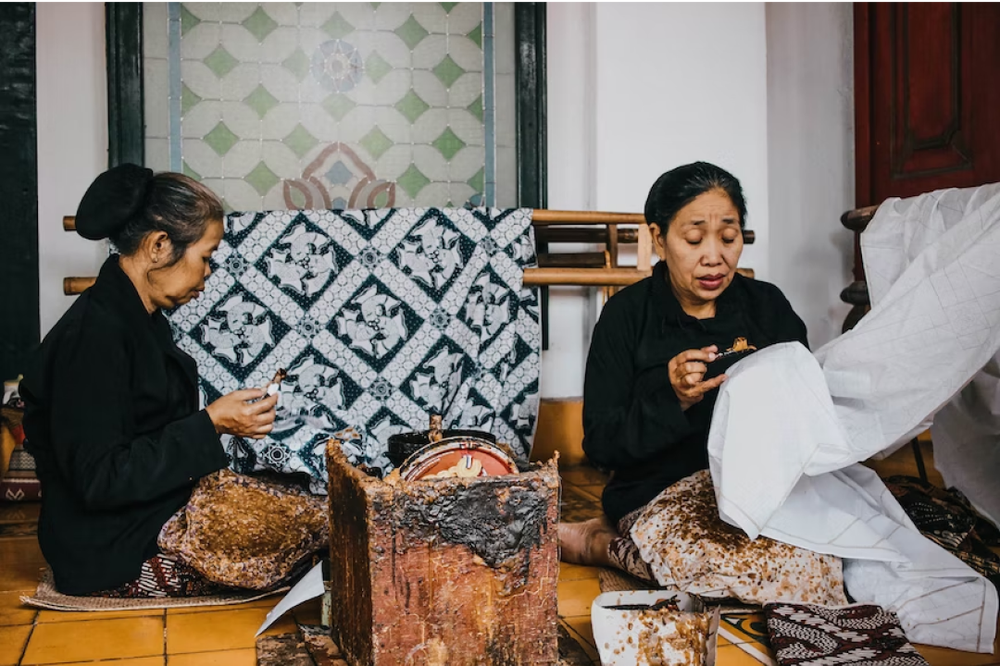

一覧（新着順）

Travel
19 Feb 2022記事タイトル記事タイトル記事タイトル
記事タイトル
本文の一部を本文の一部を表示本文の..

Culinary
25 Apr 2022The taste of Bang Embul's soto
betawi
Each region has its own specialty food..

Travel
29 Apr 2022Seeing the beauty of Bali, which has
many statues in temples
Talking about Bali is never boring to tell..

Culinary
02 May 2022Delicious and cheap Semarang
street food
There's a lot of street food in Semarang..

Travel
05 Jun 2022Karang bebai beach Lampung for
summer vacation
Talking about Bali in never boring to tell..

Travel
13 Jun 2022The upside-down mystical forest in
Banyuwangi
This place is most often used as a phote.